Hackers, engineers, managers, mathematicians and humanists
Cultures of Programming — Part 2
Tomas Petricek, Charles University, Prague

Mathematical
Program as a mathematical entity
Programming
in the 1940s
Plugging cables to connect ENIAC units
Mathematics?
Mathematical problems
Numerical analysis
Computing in academia
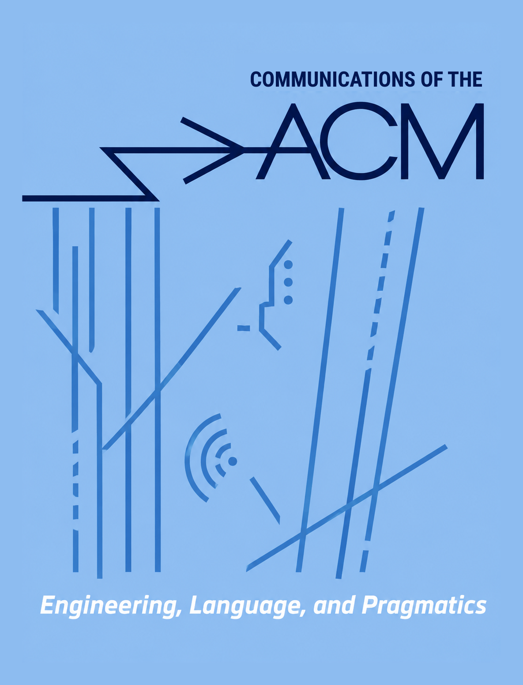
Letter to the editor (1966)
The creation of computer science departments is analogous to creating new departments for the railroad, automobile, radio, airplane or television technologies.
Mathematical science shift
- Program as a mathematical entity
- Analysis of program correctness
- Theoretical computer science
Algol (1958)
Language definition using formal grammar
Recognized as an object of beauty but implementation lagged
Reference language,
publication language,
& implementation language
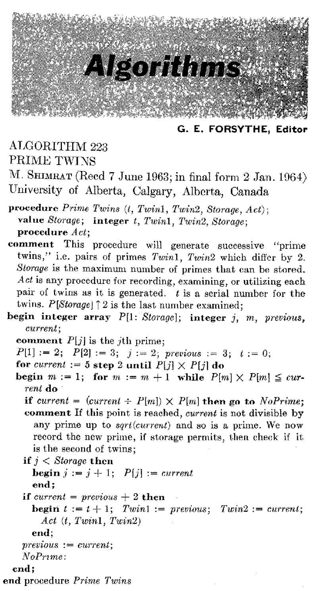
Algorithms
Established as a central object of computer science
Talked about, published
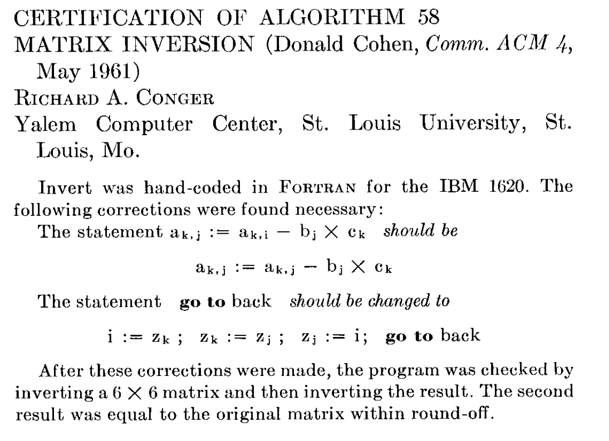
Achievements
Mathematical culture today
- Formal language specifications
- Theory of programming languages
- Complexity theory of algorithms
- Type systems in Rust or TypeScript
- Real systems like CompCert and sel4
Real-world verified software systems
No longer just a mathematical problem
Requires large-scale engineering efforts
One culture is
rarely enough!
Hacker
The hands-on imperative
Early history of programming
Hands-on in the 1940s
Batch processing in the 1950s
MIT Hacker culture (late 1950s)
TX-0 and PDP-1 at MIT
- Test computer with transistors
- Donated to MIT RLE/AI lab
- Hands-on access possible
Hacker culture
-
Playing around to
test what it can do - Tech Model Railway Club (TMRC) hackers
Hacker culture
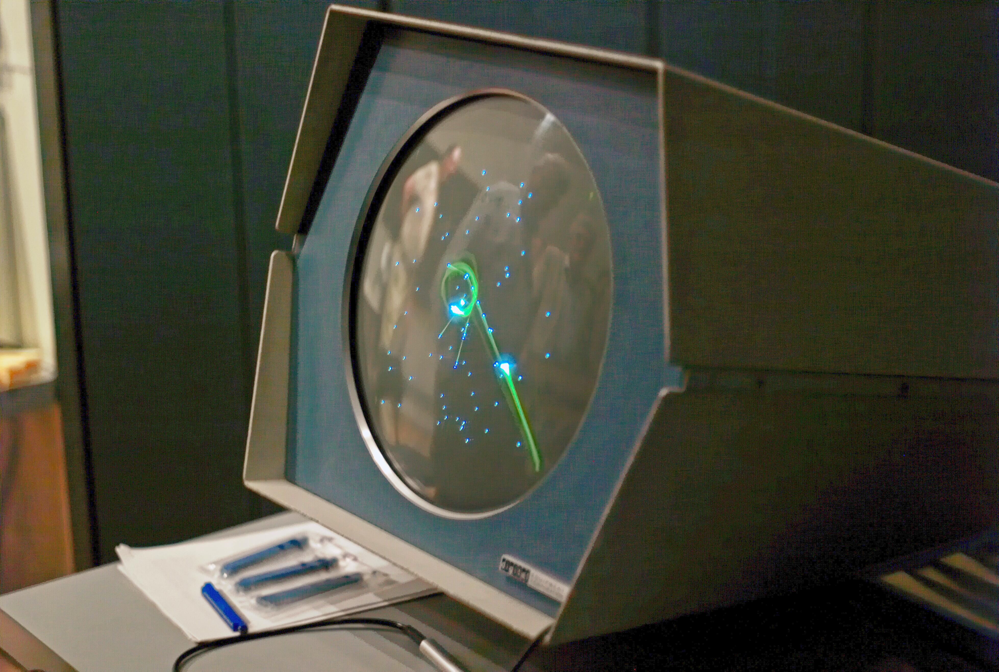
Typical projects
- ARPANET origins and used for information sharing
- Spacewar! game to test PDP-1 capabilities
- Interactive debuggers, interpreters and tools
What the culture says
Only skill matters not "bogus criteria such
as degrees, age, race, sex, position."
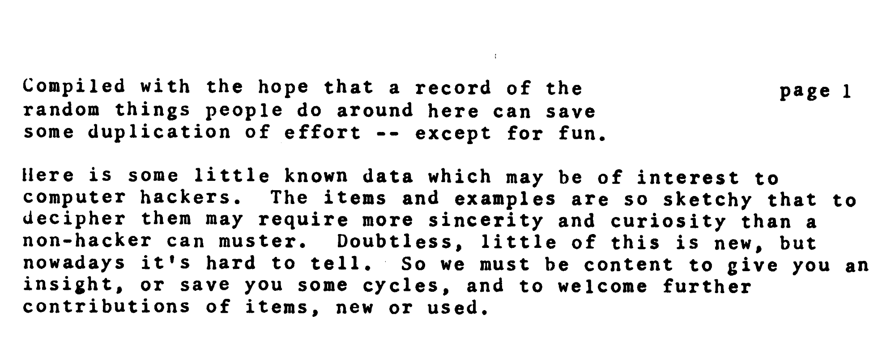
HAKMEM
Typical hacker product
Information should be free! Idiosyncratic style, Informal tech report
"Submitted without further explanation
or cautions"
Topics from pseudo-Gaussian distributed random variable to an electrical circuit for an amplifier
Technical and social achievements
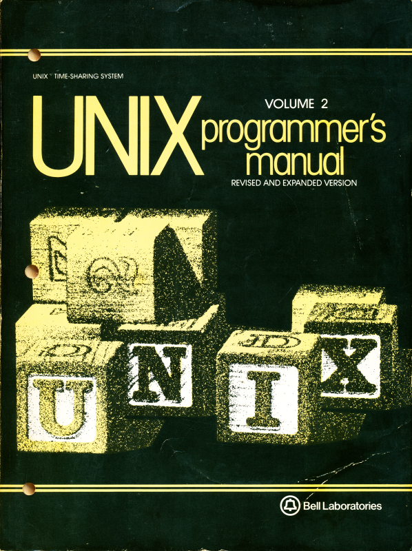
UNIX and C
- Historical community links
- Lets can exploit machine understanding
- Values clever tricks and skills
Free software
- Response to proprietary nature of UNIX
- Embodies hacker culture values
- More interesting and difficult history!
Managerial
Software development lifecycles

Semi-Automatic Ground Environment
Started operation in 1955
Radar detection of soviet bomber nuclear strike
Largest software project
at the time by far
The problem
Managing teams not code
- Estimated 27 programmers grew to 2,000
- SDC spin-off trained 7,000 programmers
- Large-scale military and business projects
- Software development as a production line
How to build software
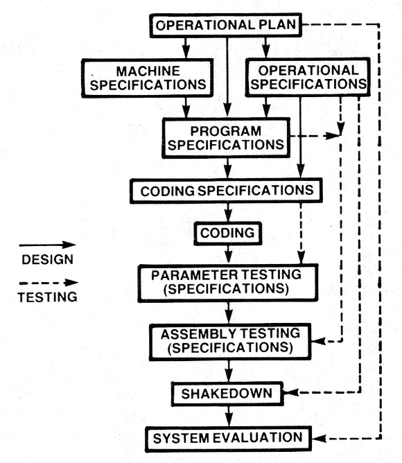
Development process
- Focus on specifications and process
- Aim for predictable costs and time
- Don't rely on individual skill
Avoiding risks
- Apollo mission guidance computer
- Bugs despite careful planning
- Risk of fixing higher than risk of mitigation!
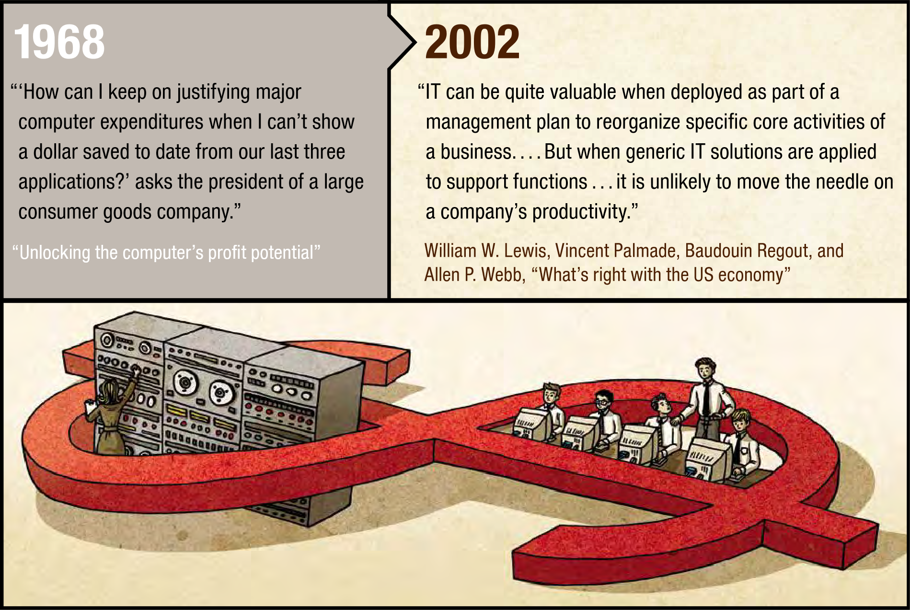
Unlocking the computer profit potential (1968)
Now that paper processes have been digitized, how can computers bring profit?
Mangers, not programmers,
should lead!
Engineering
A Proper engineering discipline
Software bugs
First actual bug (1947)
"Bugs" are small and easy
to correct, not failures.
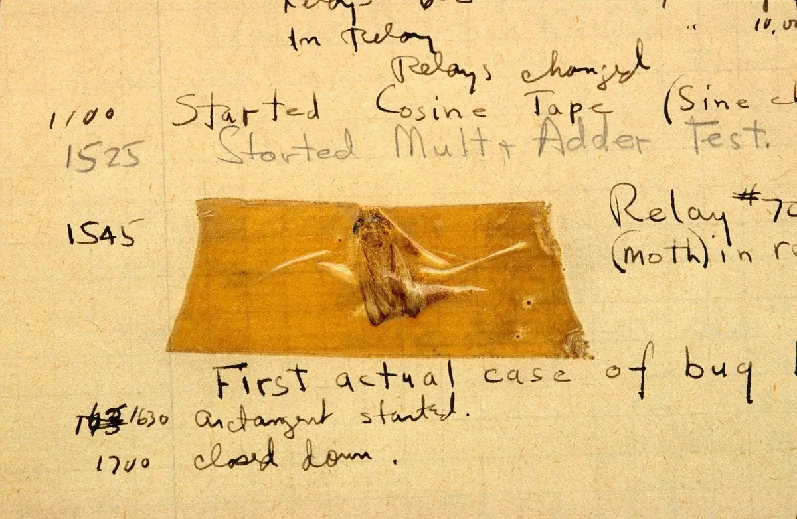
Y2K bug (2000)
Estimated $300bn spent
fixing the expected "bug".
NATO Conference on Software Engineering
Provocative title
"Black art of programming has to make way for the science of
software engineering!"
New way of thinking
- Hackers do not have reliable methods
- Mathematics is too complicated (Algol 68)
- Follow-up 1969 conference considered a failure
Engineering
Practices and values
- Careful development planning
- Rigorous testing and measurements
- Documentation and use of tools
- Overengineering and error handling
- Professionalism and code quality
Engineering methodology
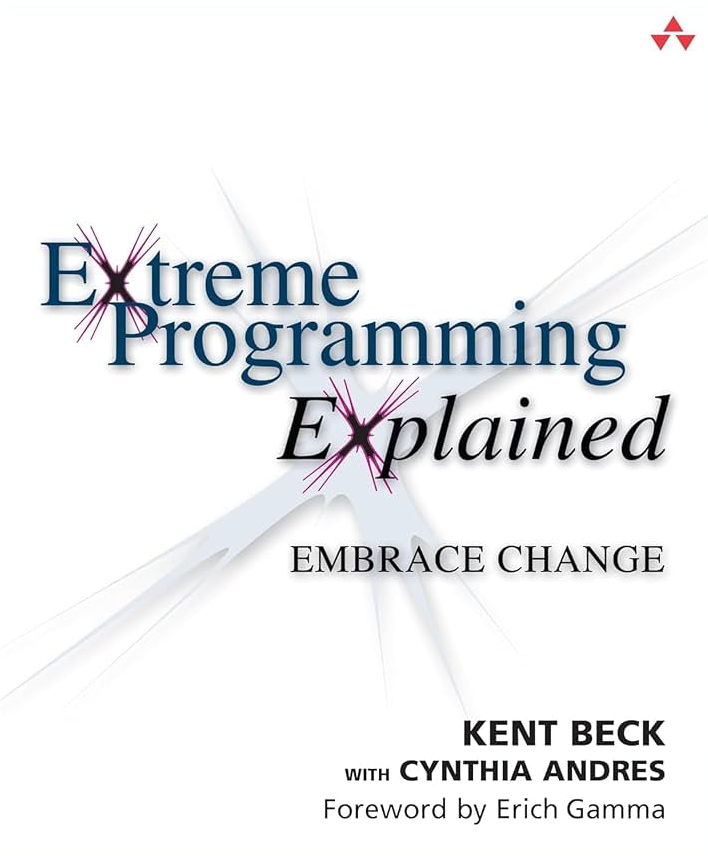
Extreme programming
Reduce the cost of changes, shorter product cycles, direct contact with customer and their needs
Focused on code
- Customer part of the team
- Writing tests before programming
- Tests become product specification
Humanistic
New Media for Thinking
Focus on human, learning, thinking
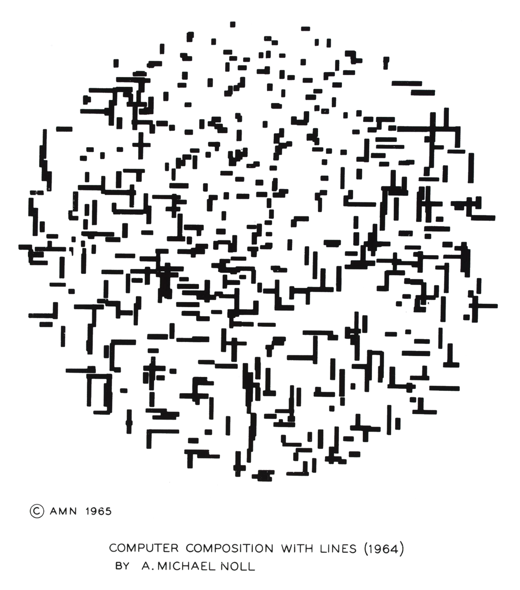
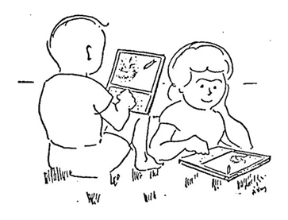
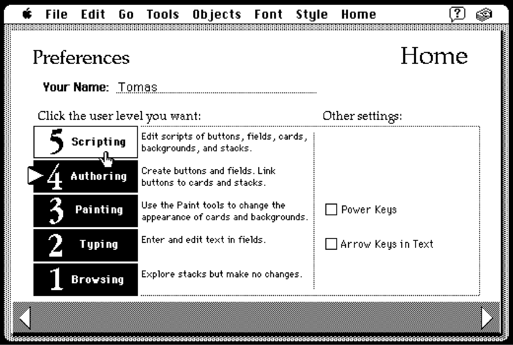
Two visions of computing
As We May Think (1945)
Memory machine making knowledge accessible
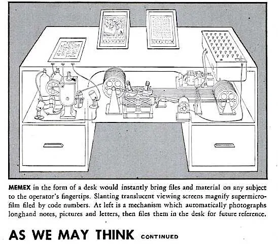
Augmenting Human Intellect
Improve intellectual effectiveness of human beings (1962)
Programming as a new literacy
Logo programming language
- Known for turtle graphics
- Rethinking education from scratch
- Whole learning environment
Smalltalk language
-
"A personal computer
for children of all ages" - Manage all user's informational needs
- Language for "talking" to the system
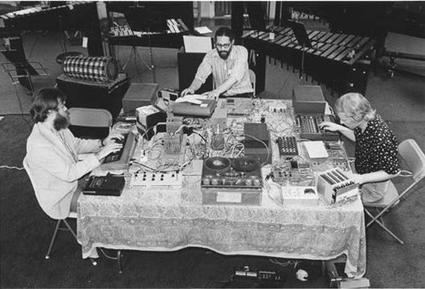
Computers to support creativity
The League of Automatic Music Composers (1970s)
Automatic music production with microcomputers (KIM-1)
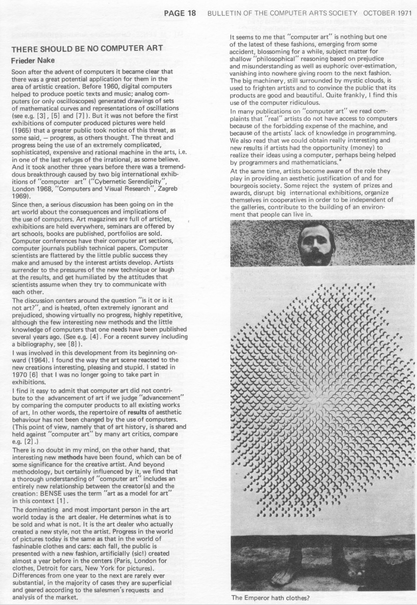
Frieder Nake (1971)
Computer art is becoming the latest fashion
Instead we should ask
Use computer to analyse aesthetics and its use
How computers alienate artists from their work?
Cultures of programming
Hackers, engineers, managers,
mathematicians and humanists
- Typical values and ways of thinking
- Applies to the past and the present
- Not intended as strict classification
- Interesting things happen when they meet
Cultures of Programming
Home Continue to Part 3